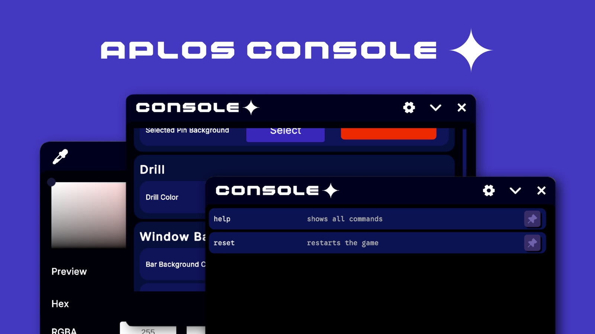

// Lvl 13 · 2025–2026
A drop-in overlay developers open while a game is running, to trigger custom commands, adjust settings live and watch log output without leaving play mode or rebuilding the project.

It is designed around extension. Nearly every seam in the system is an interface, so commands, input backends and persistence can all be swapped or added to without touching the core.
Built with Ayielin Gist under Lumencore Studios, and released under the MIT Licence. Development made use of AI-assisted coding.